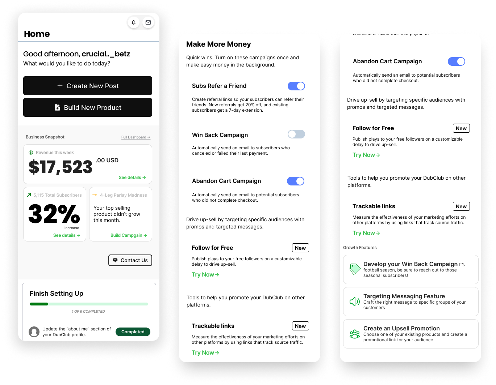
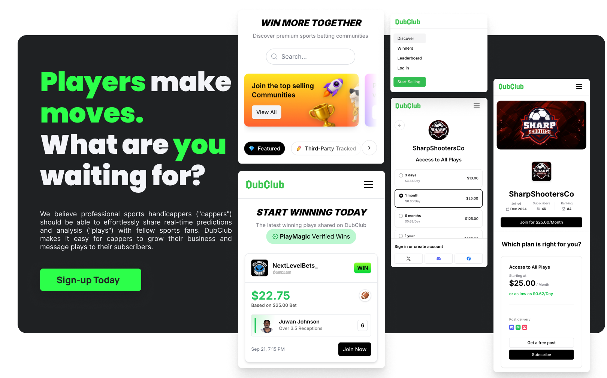

Case Study
DubClub
Building a 0-to-1 social audio product from concept to 2M+ users — defining the product vision, design language, and end-to-end experience for a new category of sports media.
Overview
Sports fans wanted to engage with live games beyond passive viewing — reacting in real-time, hearing hot takes from people they trust, and feeling the energy of a crowd without being in the stadium. As the founding designer, I owned the entire product experience from scratch: brand, design system, and every user-facing surface across iOS and Android.
No existing product combined real-time audio with sports-specific context and discovery. The gap was obvious. The execution was everything.

Research & Discovery
Competitive Landscape
The gap nobody had filled
I mapped the competitive space across social audio (Clubhouse, Twitter Spaces), sports media (ESPN, Bleacher Report), and fan community platforms (Discord, Reddit game threads). The pattern was consistent: no product combined real-time audio with sports-specific context and discovery.
I ran 30+ interviews with sports fans across different engagement levels — from casual viewers to fantasy league organizers. Five patterns defined the opportunity:
- Fans crave real-time social connection during live games, not post-game recaps
- Audio is preferred over video for multitasking — fans watch the game simultaneously
- Trust and credibility of hosts matters more than production quality
- Discovery is broken — fans can't find rooms for their specific team or game
- The cold-start problem is real — joining a silent room feels deeply awkward

Competitive analysis — mapping the social audio and sports media landscape
"Audio is preferred over video for multitasking — fans want to watch the game and be part of a conversation at the same time."
— Key finding from 30+ user interviews
Design Process
Information Architecture
Two needs, one architecture
The core IA challenge was balancing scheduled rooms (pre-game shows, recurring podcasts) and spontaneous rooms (live reactions during games). I designed a dual-feed architecture — a "Live Now" tab for in-progress rooms and a "Schedule" tab for upcoming events, unified by a game-centric navigation model.
I explored 4 distinct design directions — from minimal (audio-first, no visual chrome) to immersive (live stats overlays, animated reactions). The winning direction was "contextual simplicity" — a clean, dark-themed interface that surfaced just enough game context without competing with the audio experience.
IA exploration — dual-feed architecture mapped to the sports calendar
Design System
Built from scratch, scaled to 40+ screens
I built the design system from the ground up — defining a token-based architecture with a dark-first color palette, sport-specific accent colors, and a typography scale optimized for glanceable information during live events.
The system scaled across 40+ screens and was adopted by the growing design team without significant deviation — validating the architecture decisions made in those early stages.
Token-based design system — dark-first palette with sport accent colors
The Solution
Three core experiences, each designed to reduce friction at the moment of highest intent.
Final product — game-centric discovery, live room experience, and host scheduling
Core Experience
From "I want to talk about this game" to "I'm in a room" in under 3 seconds
Instead of browsing generic room lists, users see a feed organized by live and upcoming games. Each game card shows active rooms, listener counts, and featured hosts — letting fans find their community instantly.
The room UI was designed for ambient listening with easy escalation. Users enter muted by default, see a minimal speaker layout with real-time game context, and can request to speak with a single tap. The "raise hand" mechanic was specifically designed to lower the social anxiety barrier identified in research.
Room experience — ambient listening with one-tap participation
2M+
Users within the first year of launch
94%
Task completion rate for core flows, up from 72% in beta
3.2×
Higher retention for users who joined a room in their first session
★ 4.7
App Store rating with consistent praise for ease of use
What I Learned
Reflection
The hardest design problems aren't visual — they're structural
Building 0-to-1 taught me that getting the information architecture right had 10× more impact on retention than any UI polish. Game-centric vs. room-centric navigation was a structural bet — and it paid off.
The biggest lever for growth was reducing the time from "I want to talk about this game" to "I'm in a room talking about this game." That's a design problem, not a marketing one. Constraints clarify what matters: when you're building alone with 4 engineers and a tight timeline, every decision has to earn its place.
Post-launch iterations informed by session recordings and in-app surveys
Get in Touch
Like what
you see?
Let's talk about your next project.